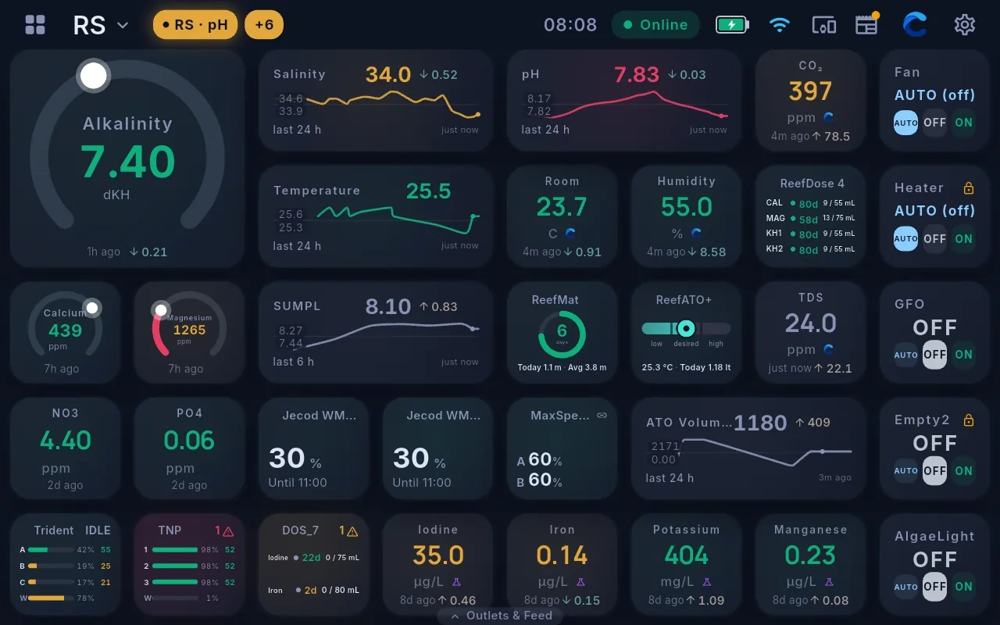
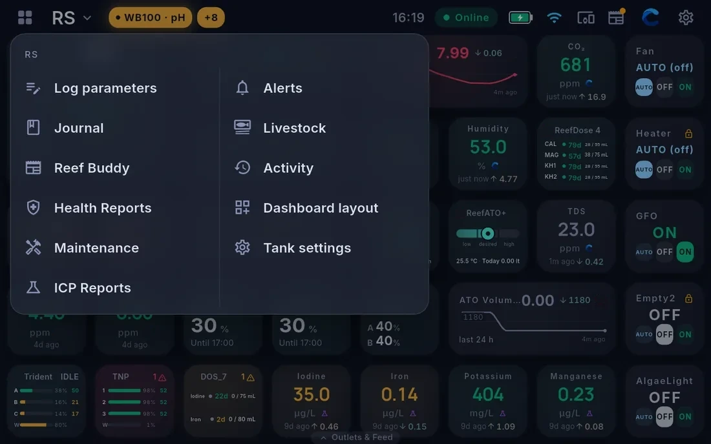

The Cora Max home screen
Cora Max shows one tank at a time, filling the screen with live readings you can read from across the room.

The top bar
Left to right:
- The grid icon opens the Reef Room, the overview of every tank this screen shows
- The tank name, with a chevron. Tapping it opens the tank menu: Log parameters, Journal, Reef Buddy, Health Reports, Maintenance and ICP Reports
- Alert pills — anything currently out of range, with a +n when there are more than fit. Tap to see them all.
- The clock
- Online — Cora Max's own connection state. If this says anything else, the screen is showing you the last data it had.
- Battery and Wi-Fi
- The devices icon — everything connected, and how it is doing
- The journal icon — add an entry without leaving the screen. A dot means there is something new.
- The Cora swoosh — starts a voice conversation
- The gear — settings
The dashboard
The remainder of the screen is the dashboard: a fixed grid of widgets, all visible at once. The Cora Max dashboard does not scroll.
Widgets work the same as on your phone, at a size you can read standing back. See Widget reference for what each shape shows, and Editing the Cora Max dashboard to change what is on it.
Every widget showing a measured parameter carries its age and its source, just like on the phone. A number with 2d next to it is two days old, and Cora will not pretend otherwise. Device and control tiles show their own state instead.
The tank menu

Tapping the tank name opens the menu for the tank currently on screen:
| Item | Opens |
|---|---|
| Log parameters | Enter test-kit readings on the on-screen keyboard |
| Journal | The journal for this tank |
| Reef Buddy | The current briefing |
| Health Reports | Health assessments |
| Maintenance | The task list |
| ICP Reports | Uploaded lab results |
Switching tanks
Use the grid icon at the far left of the top bar to reach the Reef Room, then open the tank you want. Each tank keeps its own dashboard layout, so the whole screen changes as you move between them.
The Outlets & Feed drawer
The tab at the bottom of the screen pulls up a drawer with every outlet on the system and the feed controls.
- Outlets — each one switchable between Auto, Off and On
- Feed — pauses the right equipment for a feeding and puts it all back afterwards
If something looks out of place
If readings look stale or the top bar is not showing Online, start with Troubleshooting.
Written for Cora Max 0.28.36 and Cora Mobile 0.5.54.
Still stuck? Email cora@coraiq.tech and we'll help.